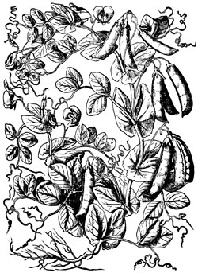
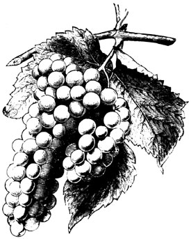
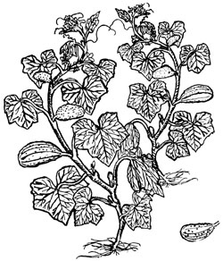
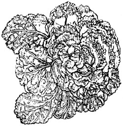

Farming For Self-Sufficiency
March/April 1976
Independence on a 5-Acre Farm
Copyright © 1973 by John and Sally Seymour, Introduction copyright © 1973 by Schocken Books, Inc.
Ah, the vicissitudes of time. Two years ago, when there were NO currently relevant small-scale-farming introductory handbooks available, many of us welcomed the publication of Richard Langer's Grow It! with open arms. Now that we're all older and more experienced, however, some folks find it increasingly easy to criticize that breakthrough beginner's guide (see the Feedback sections of MOTHER NOS. 23, 24 and 25).
Which brings us to another breakthrough book that is just as important (probably more so) now as Grow It! was two years ago . . . and which may well come up for its share of criticism in another 24 months or so.
Be that as it may, John and Sally Seymour's record of 18 successful years on a shirttail-sized homestead in England is important now and should offer welcome encouragement to today's back-to-the-landers . . . both real and imaginary. I started serializing the book in my No. 25 issue and I'm sure that many readers will want a personal copy for their home libraries.-MOTHER.
STORAGE OF VEGETABLES
It Is very hard to imagine, Indeed, what anyone should want ice for, in a country like this, except for clodpole boys to slide upon, and to drown cockneys In skiting-time.
WILLIAM COBBETT
From which remark one gathers that Cobbett would not have been a great exponent of the deep freeze. We have a deep freeze now, but personally I think it is a misuse of this instrument to use it for the storage of vegetables. The reason for this is that, in the British Isles at least, it is possible to have good fresh vegetables from the garden all the year round, and it is far better to "enjoy the fruits of the earth in their season" than to try and prolong the seasons of vegetables by freezing them into some horrible mush in plastic bags in a freezer. The reason why asparagus tastes so marvellous when you first get your teeth into it late in April or early in May, when you have just begun to get sick of spring cabbage, is that you have not tasted it for eleven months. If you had it every few days out of a deep freeze it would be old hat-there would be no freshness about it. This applies to peas, too, which I am told "freeze well"; fresh they are a great gastronomic experience (if they are garden peas-not blue bullets from the greengrocers), and it is a crime to keep nibbling peas all winter, thus doing yourself out of the great treat of eating them in the summer time when they come ripe as a fresh experience. I am not talking about dried peas, which are an entirely different kettle of fish.
RUNNER BEANS
People freeze runner beans. They are crazy in their heads. I have eaten frozen runner beans and they are not a patch on salted ones. Runner beans are things you can quite justifiably store, because if you have planted them properly you will have such a glut of them that you will eventually get tired of them, and they store so cheaply and easily. Pick them when they are young and green (not old and stringy), slice them (we do it with a little bean slicer that screws on the table), lay them in layers in a big crock with 1 lb. salt to 3 lbs. beans and pack tight to exclude air. When the crock is full cover it up. If they go bad 'you have not put enough salt in them. When you want runner beans, some time in the winter when the weather is foul and you don't feel like going out into the snow to pick Brussels sprouts, pull a handful out of the salt, wash under the tap for an hour and then boil. You can hardly tell the difference between salted runners and fresh. I know this goes against the "fruits of the earth in their season" philosophy, but I think an exception should be made in the case of runner beans. It is good always to have some green vegetables available no matter what the weather.
ROOT VEGETABLES
Root vegetables of course should be stored, for the idea of the swollen root (or stem as it is in some cases) is just that-to store the summer's goodness for the winter time. We have discussed clamping under potatoes, but I will recapitulate it here. Pile any root vegetable in a long pyramidal heap, cover the heap well with straw or bracken (a foot thick at least), cover that with earth which you pat on hard with a spade. Leave straw sticking out at the bottom about every two yards to let air in, and little straw chimneys sticking out of the ridge at the top every two yards to let the air out. Most roots don't like frost, and the clamp protects them from it. If you have a good dry root cellar, or really frost-proof outbuilding, you might use them instead: less work than clamping. Potatoes don't like light (it makes them green and inedible). Parsnips don't mind frost-in fact they taste better after having been frosted: leave them out where they grow and dig them as you want them. A disadvantage of the root cellar or indoor store is that you can get a build-up, after a year or two, of spores which attack the roots you keep there. Clamps avoid this trouble, and personally I prefer them.
DRIED PEAS, BEANS OR PULSES
These must be properly harvested. They must be allowed to ripen absolutely in the haulm, gently pulled, left in the sun and wind for some time, turned occasionally, then, if you have the room, hung up in bunches from the roof of a shed. If you don't have room like this to spare, and have a lot of peas or beans, make a rick of them and keep the rain out. Thresh with a flail and keep in dry bins or crocks. Soak for at least twelve hours before cooking, and add a little milk to the water when boiling.
ONIONS
Onions should also be properly harvested. When they are quite ripe it is a good plan to bend their tops over for a week or so. Then lift them out of the ground and lay them on their sides, bottoms to the sun, for a week or two, turning them occasionally. The best way to store them is to hang them in strings, which is quite simple just hang four strands of bailer or binder twine down from a hook, and plait the short tops you have left on your onions in to the strings-weave them in like the warp and weft of a cloth. Nothing looks nicer than a dozen or so fat strings of onions hung under the eaves of your house on the southern side, or else hung in an airy shed, or a big kitchen. To pickle onions: soak in brine for three days, wash, dry and put in boiling vinegar.
CELERY
Celery is better when it's had a frost on it, and is that valuable thing-a winter fresh vegetable. Leave it in the garden, well earthed up, and eat it sparingly. Like peas and Brussels sprouts you will never have enough. In very severe weather cover the rows with straw or bracken.
TOMATOES
Tomatoes can be bottled when ripe, made into chutney green, or each one wrapped separately in tissue paper and put in a drawer. Some can be laid, green, on a window-sill to ripen, but they'll probably go rotten like this. We used to lay them in draper's wadding, in drawers, not touching each other. If you live in a hot country, like Spain, you can hang them, ripe, in bunches in the sun. They'll shrivel up and keep good. I think we should experiment in England with doing the same thing with artificial heat. Spanish dried tomatoes have a marvellous flavour. When picking tomatoes for dry-storing leave the stems on and do not bruise. To bottle tomatoes, wash in cold water, place in bottles, fill bottle with brine made with 1/2 oz. salt to 1 quart water. Put the screwtops on the bottles but do not screw them tight because, obviously, the steam must escape or the bottles will burst. Place the bottles in a large kettle of cold water, with the water covering the tops, and bring slowly to 190° F. (88° C.) Keep it there for half an hour. Remove bottles from water and screw tops tight immediately. Another way is to scald the tomatoes first in boiling water for ten seconds, pull them out and drop them in cold water then you can remove the skins. Pack the fruit tightly into the jars with no added liquid, but if you add a teaspoonful of salt and half a teaspoonful of sugar to each pound of fruit it is said to improve the flavour. Then heat an sea[ the jars as for tomatoes in brine.
BOTTLING
I will here say a word or two about bottling in general. We have always used kilner jars, which are proprietory jars with screw tops holding down a glass disk on a rubber ring. The rubber rings need renewing occasionally (every few years-or as soon as they stretch) and the metal parts of the tops should be well rubbed with vaseline before you use them, otherwise they will rust. Store rubber in the dark. There are other proprietory bottling jars: they all have one thing in common: they cost money. Our forebears used to preserve things by putting them in stoneware jars, or pottery jars, or old glass jars, sterilizing by boiling as we do, then sealing by running hot fat, hot wax or other air-excluding substance over the material to be bottled. The principle of bottling is simply this. You destroy all the micro-organisms which might cause decay by heating them, while the material is still sterile; then you seal it from the air so that no more micro-organisms can get in. Canning is the modern industrialized way of doing the same thing.
For bottling it is very good to have a bottling boiler, which has a false bottom to stop the glass jars from standing directly over the source of the heat, and a hole in the lid for a thermometer. You can buy a special bottling thermometer. If you haven't got a thermometer you can achieve the same result by filling your bottles with hot syrup or brine, plunging them into hot water, heating until the water is simmering and keeping it simmering for half an hour. The idea, though, of the thermometer method is so that you do not have to heat the stuff you are bottling more than absolutely necessary to sterilize it, for over-heating kills the flavour, and, with that, the vitamins. If you haven't got a bottling boiler any old receptacle will do, provided that it is deep enough for you to be able to stand the bottles on a metal plate or grid or something (even a thick cloth) just to keep their bottoms from touching the source of heat.
If you grow outdoor tomatoes most of them won't get ripe. Such of these, as are not blighted, as you don't think will ripen in drawers, make chutney of:
Take 1 lb. of green tomatoes, cut them up; chop up half a pound of onions, put in 1 oz. of salt, 2 teaspoons of cayenne pepper, 1-1/4 pints of vinegar, 3/4 lb. brown sugar or honey, 1/2 lb. raisins; simmer in a saucepan until it goes thick. Bottle hot in hot sterilized jars, and you don't need to heat the jars again . Don't cover with metal covers or the vinegar will eat the metal. Greaseproof paper is good enough to cover chutney, like jam.
It is well worth going to some trouble to preserve tomatoes. If you can grow a few tomato plants in the greenhouse, and some out of doors, you will have fresh tomatoes for a good many months of the summer and autumn, but after this you must have them preserved. Tomatoes make all the difference to good cooking, and, further, they are the third richest source of vitamin C that we have available (black currant being the highest, lemon next).
Another use for surplus tomatoes is tomato juice. To make this you simmer the tomatoes and then rub the pulp of them through a fine sieve. Add to it 1/2 pint water, 1 oz. sugar, 1 teaspoonful salt, 1/2 teaspoonful pepper. Bring to boil immediately (you must not leave it in the air or it will go brown), pour into hot bottles, stand for ten minutes in boiling water and seal.
FRUITS
Other things well worth bottling, particularly if you have children in your community, include blackcurrants, blackberries, raspberries and their kin, gooseberries. Put into bottles, fill bottles with a syrup of 8 oz. sugar to 1 pint water, boiled and then cooled, put on caps lightly, place bottles in bottling boiler, fill with cold water over the tops of the bottles, bring slowly to 165° F. (74° C.) and keep there for ten minutes. Haul the bottles out and tighten tops hard immediately. And here is a tip about tightening tops of bottles. After the bottles have cooled, unscrew the metal tops and pick the bottles up by the glass discs. If there is a proper seal there will be a vacuum inside and you can do this. If the glass tops come off then you must boil and seal again-you haven't got an airtight seal. After testing, if successful, replace the metal screw-top and screw on hard. Shove the bottle in a shelf and forget it until the darkness of the winter. It is very satisfying to walk into your larder and see shelf after shelf of bottled fruit in the early part of the winter: particularly if you know you have got a Jersey cow or two to milk and will have plenty of rich cream to go with it.
Soft fruit freezes quite well, and if you have a deep freeze you will probably find yourself using it to preserve your soft fruit and not going to the trouble of bottling. Pack in polythene bags of course.
People bottle all sorts of other things, like apples, but personally I think it is a waste of time.
Apples, if they are keepers, should be laid out on clean shelves (no spores from last year's fungus to decay them), on paper if you like, not touching each other, in an even temperature well above freezing and with ventilation. They should thus keep the winter through. If you have doubts about them dry some apple rings. Slice your apples into discs, core them and thread them on a string, dry them at from 120° to 150° F. (50° to 65° C.) for five hours, hang them in the cool for twelve hours, then pack in cardboard boxes and store in a dry place. If you don't want them to go brown put in the fumes of burning sulphur for ten minutes before you dry them.
Pears can be quartered and put in brine of 1 oz. salt to 1 gallon water for a minute (this stops them discoloring-you can't use sulphur with pears because it spoils the flavour). Dry the quarters on trays starting at 100° F. (38° C.) raising to 150° F. (66° C.) for five hours.
Prunes can be made of any plum or damson, and they are a rich source of vitamin A. Dip the plums into a lye made of I oz. caustic soda in a gallon of water for a few minutes. This softens the skins. Wash very well in cold water, dry on trays over your stove at 120° F. (50° C.) raising to 160° F. (71° C.) very gradually or the plums will burst. Keep in heat for two days. Soak prunes in water for 12 hours before using.
Any fruit juice can be made (if you have small babies to think about) by boiling fruit for half an hour, then strain juice through strainer, let it stand for a day, boil it for half an hour again, skim, add 1 lb. sugar per gallon of juice, boil again, skim again, pour hot into hot sterile bottles, stand bottles in boiling water for ten minutes, seal. Blackcurrant is very good like this.
MUSHROOMS
Mushrooms are marvellous dried. Thread on strings and hang over stove, 120° F. (50° C.) is right, until dry. They are best crumbled up to a, powder and stored in airtight jars or cans. Marvellous for flavouring soups or stews.
All herbs can be dried. Pick just before they flower and hang in bunches near your stove.
CHUTNEYS
Chutneys can be made of nearly anything. The principle is simmer your fruit or vegetable together with onions and spices (the more spices the merrier in my opinion and onions are essential) in vinegar. When it has boiled down to a thick goo bottle and cover with greaseproof paper. You don't need recipes of 2/3 oz. of this and 3/4 oz. of that if you just use common sense. Of course you need salt and pepper.
PICKLING
To pickle anything cut it up, lay it in salt for a day, rinse and cover with cold vinegar. Gherkins are well worth pickling. Leave these in a brine of 1 lb. salt to 1 gallon of water for at least three days (weeks if you like), pull them out of the brine and drain, pour hot spiced vinegar over them, cover and leave for 24 hours, drain vinegar off, boil it again and pour it over the gherkins. Do this twice if you like-it improves the colour. Bottle and store.
To pickle onions leave in brine of 1 lb. salt to 1 gallon water (don't skin the onions first) for at least 24 hours months if you like-the longer the better. Drain, put in jars, fill with cold spiced vinegar.
FREEZING OF FRUIT AND VEGETABLES
You can freeze tomato juice or other fruit juice by pouring it into cartons, putting it in the freezer until solid, taking out of the cartons as small blocks of ice, putting in plastic bags and back into the freezer.
All vegetables, if you must freeze them, plunge into boiling water first, bring the water back to boil and boil for three minutes, plunge into cold water, drain, pack in plastic bags, seal bags, label, and freeze.
Soft fruit you can put straight into plastic bags, seal, freeze; except gooseberries, which you should crush, sprinkle with 1 lb. sugar to 3 lbs. fruit, bag and freeze.
SAUERKRAUT
If you live in a land where no greens grow in the winter time because it is deep in snow, make sauerkraut. This is done by fermenting shredded cabbage sprinkled with salt in deep bins until you want it, which is done this way:
Rub clean the inside of a wooden tub (crock would do) with vinegar. Line it with cabbage leaves. Shred 12 lbs. cabage, mix with 8 oz. salt, pack in tight, cover with whole cabbage leaves, stir occasionally for first three weeks and then leave covered until you want it. To cook it, drain, put in boiling water and boil for 2 hours.
SWEET CORN
Sweet corn: boil well on the cob, dry cobs in slow oven overnight, break kernels off cob, store in closed jars. Sweet corn will freeze well too-take it off the cob of course and stow in bags.
We lived for eight years in Suffolk without a deep freeze, and we lived very well indeed. We hardly ever bought any food and we never felt the lack of anything. We bottled a lot, made jam a lot, dried a lot. We were never short of vegetables nor of fruit. The only difference now that we have got a deep freeze, as far as vegetables and fruit are concerned, is that we freeze soft fruit and fruit juice and don't bottle them. I have a feeling that they were nicer when we bottled them.
 |
 |
 |
|
 |
 |
|